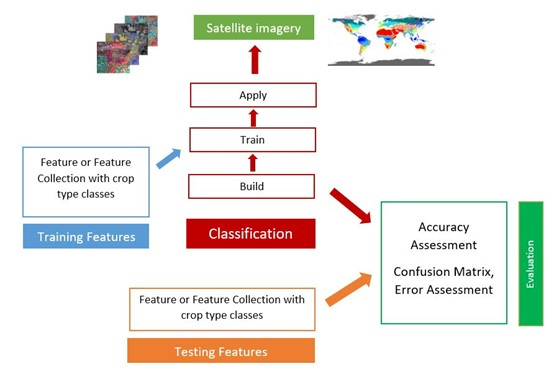
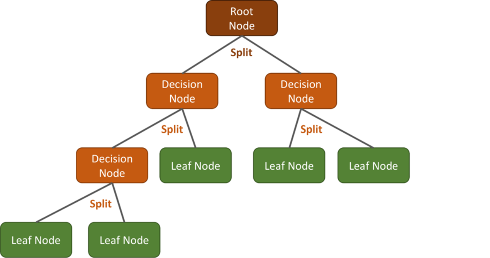
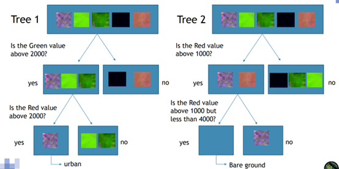
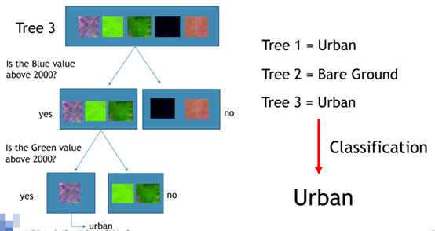
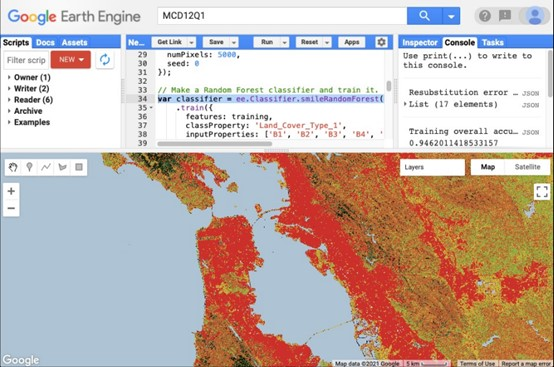
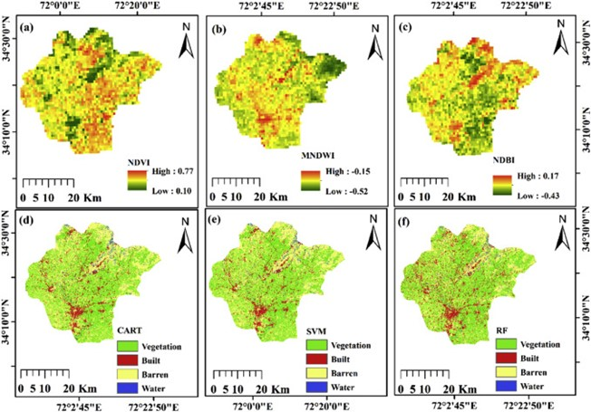

7 Week7 Classification I
7.1 Summary
Supervised classification is the most commonly used technique for quantitative chemical analysis of remote sensing image data. Supervised classification supports the idea that the user can select sample pixels in an image that represent a particular class, thereby instructing the image processing software to use these training sites as a reference for classifying all other pixels within the image.
The Classifier package handles supervised classification through traditional ML algorithms running in the Earth Engine. These classifiers include CART, RandomForest, NaiveBayes, and SVM.
7.1.1 Classification and Regression Trees (CART)- ee.Classifier.smileCart
A classification and regression tree (CART) is a predictive model that explains how to predict the value of an outcome variable based on other values.The output of a CART is a decision tree in which each fork is a partition of the predictor variable and each end node contains a prediction for the outcome variable.

Basically, a decision tree is a fairly simple structure consisting of three different types of elements: a root node, which is the starting point containing all the training samples; multiple decision nodes, where we split the data using simple if-else decision rules, and multiple terminal nodes, where we end up assigning categories for classification purposes.

7.1.1.1 Advantages and limitations
Advantages of Decision Trees:
The concept is fairly easy to understand compared to other classification algorithms.
Decision trees can be visualised to help understand or explain it.
It can handle not only numerical data but also categorical data.
Disadvantages of Decision Trees:
- Prone to overfitting, which means creating extremely complex trees that don’t generalise the data correctly.
7.1.2 Random Forest - ee.Classifier.smileRandomForest
Random Forest is a supervised learning algorithm which can be used for classification and regression. It is widely used in machine learning and constructs integrated classifiers by combining multiple CART trees.
Random forest creates decision trees on randomly selected data samples, obtains predictions from each tree and selects the best solution by voting.


7.1.2.1 Advantages and limitations
Advantages:
Use of multiple trees reduces the risk of overfitting.
Training time is shorter and not sensitive to outliers in training data.
Runs efficiently and produces high accuracy for large datasets.
Easy to parameterize.
Limitations:
Algorithm cannot predict spectral range beyond training data.
Training data must capture the entire spectral range.

7.2 Applications
While writing the above summary, I have been carrying a question: who is better among these classification methods? After searching the relevant literature with this given question, I found that there have actually been many studies on how CART, RS and SVM compare to each other, and even how they can be improved. Especially it has been mentioned and used in exploring land cover.
Zhao et al. (2024) showed that all three models performed well in LULC’s with reliable closure correlation accuracy and mapped to detect different classes of LULC’s during the classification process in the GEE platform.However, if we had to rank them: the Kappa coefficients of the CART, SVM, and RF were 94%, 95%, and 97%, respectively, while the average overall accuracy is 96.25%, 97% and 98.68%, respectively.The superior performance of the RF method in classification can be attributed to the larger size of the training dataset, which improves the classification accuracy.
Their findings are similar to those of Loukika et al., (2021) and Ouma et al., (2022) in that CART and SVM performed well in detecting and mapping water bodies in the study area; and RF and CART classifiers performed well in mapping built-up categories in the study area, whereas SVM confused them with bare soil.

My understanding is that who performs better depends on what data is used to classify, because models perform differently for different types, and only when data and methods match each other can we get better results. For example, a large number of studies have shown that RF is considered to be the most suitable algorithm for vegetation extraction in the current research field, followed by SVM; CART and SVM perform better for water classification.
7.3 Reflections
I have been learning classification methods like Random Forests since my undergraduate degree, but was limited to solving simple classification projects in R. Until I walked into the Machine Learning area of GEE this week, I was happy that the methods I had been learning could be applied to new areas and solve more complex geographic problems.
I recognised the importance of combining CART, RF and SVM models with geospatial techniques for LULC analysis because of their ability to accurately classify and predict land cover classes, detect changes over time and provide valuable insights for land management, environmental monitoring and urban planning.
However, interpreting the output of a decision tree classifier or random forest is not as simple as reading coefficients and intercepts directly from a linear regression model as applied from CASA0007.
7.4 References
Loukika, K. N., Keesara, V. R. and Sridhar, V. (2021). ‘Analysis of Land Use and Land Cover Using Machine Learning Algorithms on Google Earth Engine for Munneru River Basin, India’. Sustainability. Multidisciplinary Digital Publishing Institute, 13 (24), p. 13758. https://doi.org/10.3390/su132413758
Ouma, Y., Nkwae, B., Moalafhi, D., Odirile, P., Parida, B., Anderson, G. and Qi, J. (2022). ‘COMPARISON OF MACHINE LEARNING CLASSIFIERS FOR MULTITEMPORAL AND MULTISENSOR MAPPING OF URBAN LULC FEATURES’. The International Archives of the Photogrammetry, Remote Sensing and Spatial Information Sciences. XXIV ISPRS Congress “Imaging today, foreseeing tomorrow”, Commission III - 2022 edition, 6–11 June 2022, Nice, France, Copernicus GmbH, XLIII-B3-2022, pp. 681–689. https://doi.org/10.5194/isprs-archives-XLIII-B3-2022-681-2022
Zhao, Z., Islam, F., Waseem, L. A., Tariq, A., Nawaz, M., Islam, I. U., Bibi, T., Rehman, N. U., Ahmad, W., Aslam, R. W., Raza, D. and Hatamleh, W. A. (2024). ‘Comparison of Three Machine Learning Algorithms Using Google Earth Engine for Land Use Land Cover Classification’. Rangeland Ecology & Management, 92, pp. 129–137. https://doi.org/10.1016/j.rama.2023.10.007